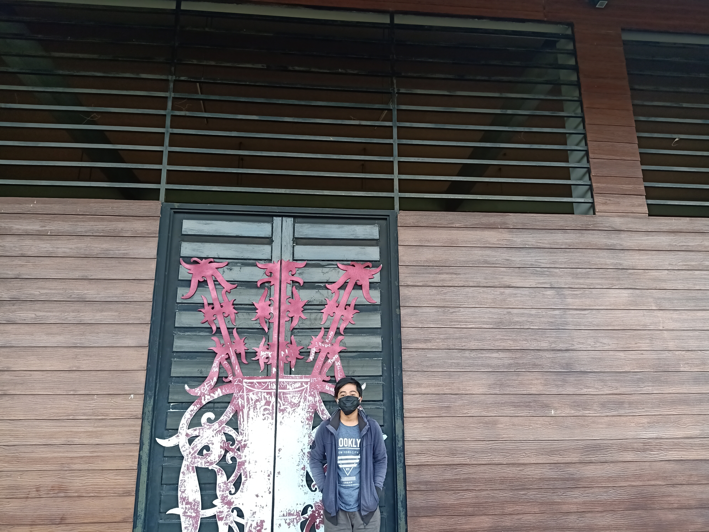
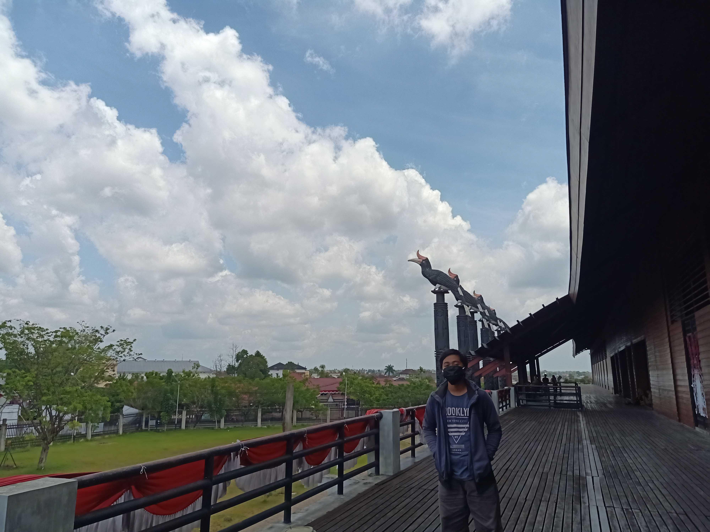

Provinsi Kalimantan Barat yang dikenal dengan Provinsi seribu sungai ini memiliki ciri khas yang menjadi karakteristik sebagai pembeda dengan provinsi lain di Indonesia. Salah satu karakteristik tersebut dapat kita lihat dari segi Rumah adat yagn dimilikinya. Seperti apa rumah adat tersebut, yuk kita ulas sedikit.
Kalimantan barat mayoritas berpenduduk suku Dayak dan suku Melayu. Dalam bahasa Dayak Kanayatn, Rumah adat di Kalimantan Barat dikenal dengan nama Rumah Panjang atau rumah Radakng. Rumah adat ini berupa model rumah panggung dengan ketinggian berkisar 5 hingga 8 meter dari permukaan tanah yang memiliki bentuk persegi panjang dengan panjang hingga 180 mdan lebar mencapai 30 m. Dengan material kayu pilihan, rumah adat ini biasanya dihuni satu keluarga intidan beberapa keluarga lain, dimana setiap keluarga menempati satu kamar. Selain sebagai tempat tinggal, rumah adat ini digunakan sebagai tempat pertemuan masyarakat, upacara, serta berbagai ritual adat suku Dayak.Bangunan Rumah adat Randakng ternyata memiliki nilai filosofi sesuai bentuk dan diperuntukannya yang mendeskripsikan sifat kebersamaan dan toleransi antar anggota keluarga. Bagian hulu rumah harus searah matahari terbit, sedangkan bagian hilirnya harus searah matahari terbenam. Hal tersebut melambangkan kerja keras dalam mengarungi kehidupan, mulai ari matahari terbit hingga terbenam. Berbeda dengan bagian depannya yang sering dijumpai patung dari kayu ulin yang menyerupai manusia ini digunakan dalam ritual mengantar arwah leluhur ke alam surga. Haltersebut dipercaya mampu mengusir roh-roh jahat. Pada intinya rumah adat Randakng inilah yang menunjukkan bahwa suku Dayak mengutamakan keharmonisan dalam bermasyarakat.